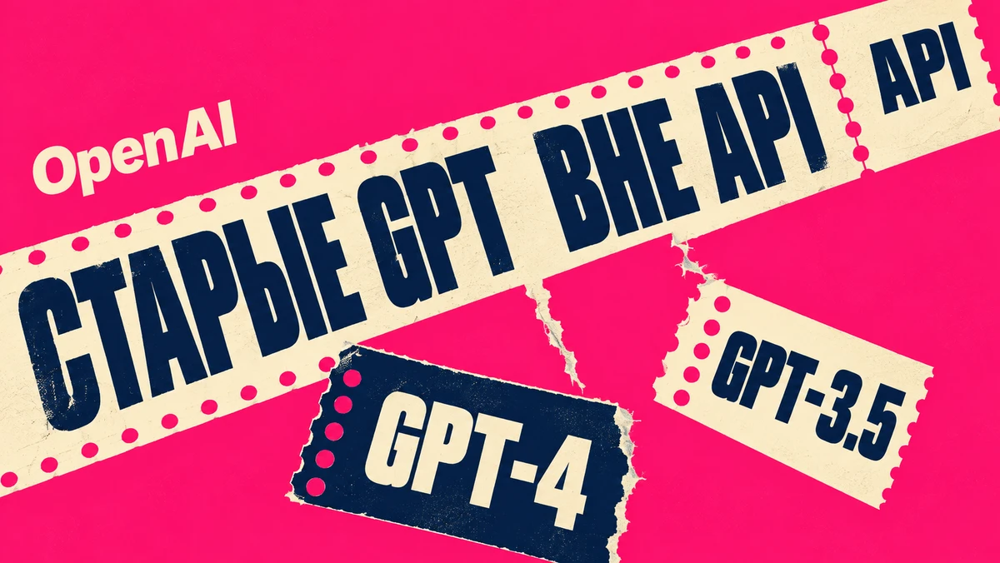

Модели и исследования
Новые языковые модели, архитектуры, бенчмарки и исследования.
27 ноября 2026

25 ноября 2026

GPT-7 уже существует? Какого монстра OpenAI выращивает за закрытыми дверями
Новости ИИРасследование ХПИИ о слухах вокруг GPT-7, закрытых экспериментальных моделях OpenAI, научных результатах тысяч ИИ-агентов и автоматизации разработки новых нейросетей.
Голосовой ИИ Haru-4B слушает вас даже во время собственного ответа и работает без облака
Новости ИИЯпонская higurashi открыла Haru-4B, голосовую модель, способную одновременно слушать и говорить. speech.cpp 0.11.0 добавил локальный запуск на Windows, Linux и Mac.

Китайцы открыли ИИ на 1,6 триллиона параметров. Он работает на чипах Huawei
Новости ИИMeituan открыла веса LongCat-2.5 с 1,6 трлн параметров под MIT. Модель поддерживает программирование, мультимодальные задачи и оптимизированную конфигурацию W4A4 для Huawei Ascend.
24 ноября 2026

23 ноября 2026

В Китае открыли биржу нейросетей. Уже 50 миллионов запросов в день
Новости ИИBaidu представила Token Exchange, площадку для сравнения и покупки доступа к ИИ-моделям. Компания заявляет о 50 млн обращений в день и более 100 предложениях.

Главный учёный OpenAI предложил притормозить гонку ИИ, и Альтман согласился
Новости ИИГлавный учёный OpenAI Якуб Пахоцкий предложил разработчикам согласовать пределы развития ИИ, преодолеваемые после выполнения конкретных требований безопасности. Сэм Альтман поддержал идею.

OpenAI научила GPT молчать о своих «мыслях»
Новости ИИOpenAI представила защиту от атак, выманивающих скрытые рассуждения GPT: в тестах компании успешность извлечения данных из предыдущих запросов снизилась с 54% до 0,2%.
22 ноября 2026
20 ноября 2026

19 ноября 2026

Google выпустила Gemini 4 Neon: обогнала Claude Opus 5.5 и GPT-6.2 Sol в тестах
Новости ИИGoogle представила Gemini 4 Neon для программирования и задач ИИ-агентов. В Artificial Analysis модель набрала 61 балл; Google сравнивает её стоимость выполнения задач с Gemini 4 Carbon.

Microsoft создала ИИ для поиска уязвимостей: в тесте он обошёл GPT-6 Astra при затратах в 50 раз ниже
Новости ИИMicrosoft представила MAI Cyber 2 Flash для поиска уязвимостей. В тесте CyberGym-E2E модель достигла 92,3% успешных заданий против 91,5% у GPT-6 Astra при затратах менее 2% стоимости конкурента.

Microsoft заявила, что её ИИ-программист почти сравнялся с Claude Opus при затратах в 20 раз ниже
Новости ИИMicrosoft представила MAI Code 2 и MAI Code 2 Flash для программирования в GitHub Copilot. По четырём тестам компании MAI Code 2 достигла 96% результата Claude Opus 5.5 при 5% затрат с учётом временной скидки.
18 ноября 2026
Google открыла Gemini 4 Carbon платным пользователям и показала «рой» ИИ-агентов
Новости ИИGoogle расширила доступ к Gemini 4 Carbon: платный API, корпоративные клиенты и подписчики AI Ultra. Показала экспериментальный /swarm, объявила цены до и после 30 ноября.

Китайские нейросети учатся на ответах OpenAI
Новости ИИReuters изучило свыше 300 документов о том, как китайские исследователи используют ответы американских нейросетей для дообучения собственных моделей. Один эксперимент дал 10 750 двуязычных примеров для Qwen.

OpenAI выпустила GPT-6.2 Astra и Sol: новая Astra почти догнала Claude
Новости ИИOpenAI выпустила GPT-6.2 Astra и Sol. Astra почти догнала Claude Fable 5.2 по общему индексу Artificial Analysis, Sol показала низкую стоимость заданий в FrontierCode 2.0.
17 ноября 2026

GPT-6 Astra помогла физику найти решение задачи, над которой работали больше 50 лет
Новости ИИНатаниэль Крейг с помощью GPT-6 Astra предложил математическую конструкцию для непертурбативного описания Стандартной модели на решётке. О роли нейросети физик рассказал 15 ноября.

Alibaba выпустила Qwen4-Max: из обучения нейросети убрали инструкции для кибератак
Новости ИИAlibaba выпустила флагманскую Qwen4-Max с дополнительными мерами против злоупотребления моделью для кибератак, архитектурой MoE и миллионным контекстом.
16 ноября 2026

15 ноября 2026

ИИ Salesforce улучшил другую нейросеть за 80 часов
Новости ИИИсследовательская система Salesforce SFR-AutoR&D за 80 часов улучшила модель поиска документов и затем ускорила её в отдельном девятичасовом эксперименте. Все результаты — по испытаниям Salesforce.

Google выпустила ИИ, который отвечает на тысячу вопросов без слов
Новости ИИGoogle представила Gemini Decision 1 — API для массовой проверки до 1000 условий по тексту, изображениям, аудио, видео и PDF. Модель возвращает вероятности заранее заданных ответов вместо генерации текста.

Alibaba показала Qwen 4 Max — и сразу назначила дату отключения
Новости ИИAlibaba выпустила предварительную мультимодальную Qwen4-Max-Preview с контекстом до миллиона токенов, поддержкой инструментов и видео. Тестовый доступ к этой версии ограничен сроком до 25 ноября 2026 года.

Японцы открыли пять ИИ-моделей для беспилотных машин
Новости ИИЯпонская TIER IV представила пять ИИ-моделей для автономного вождения на платформе Autoware. Варианты различаются используемыми датчиками, картами, вычислительным оборудованием и степенью готовности к дорожным испытаниям.
14 ноября 2026

ИИ научили снимать будущее
Новости ИИИнститут фундаментальных моделей при MBZUAI выпустил открытую PAN 2: модель создаёт до 20 секунд видео возможных последствий действий по картинке и текстовому описанию, а в тестах разработчиков полностью воспроизвела 34% многошаговых сценариев.
Роботам дали «мышечную память» — теперь они справляются с 92% испытаний
Новости ИИИсследователи MIT и Университета Карнеги — Меллона разработали Workspace Models: компактная память помогает роботам удерживать важные события и быстрее действовать. В четырёх лабораторных заданиях средний успех достиг 91,5%.

Учёные научили роботов падать в 6,5 раза реже
Новости ИИУчёные Мичиганского университета представили PRISM — модуль управления роботами, который снизил частоту падений в симуляции и повысил успешность захвата предмета настоящим манипулятором.

Google научила ИИ искать причины болезней в отдельных клетках
Новости ИИGoogle DeepMind представила AlphaGenome 2: модель исследует влияние вариантов ДНК на активность генов в отдельных типах и состояниях клеток. Доступна учёным через API.
13 ноября 2026

12 ноября 2026

«Остальное не трогай»: ByteDance показала 100 правок одной картинки в Seedream 5.5
Новости ИИByteDance представила Seedream 5.5 и продемонстрировала 100 последовательных правок одного изображения с сохранением нетронутых областей. Модель также поддерживает прозрачный фон и улучшенную генерацию текста.

Google испытала Gemini Robotics 2.5 на заводах Mercedes-Benz: 96% удачных операций
Новости ИИGoogle DeepMind представила Gemini Robotics 2.5 — модель для управления роботами. На заводах Mercedes-Benz гуманоид Apollo 2 от Apptronik сортировал металлические детали с заявленной успешностью 96%; компания также сообщила об улучшениях в лабораторных задачах.

Zyphra выпустила ZONOS3-Mini: клонирует голос и работает прямо в браузере
Новости ИИZyphra выпустила ZONOS3-Mini — открытую компактную нейросеть для синтеза и клонирования голоса с поддержкой 43 языков, включая русский. Модель задействует около 100 млн из 800 млн параметров и может работать локально в браузере с WebGPU.

Google проверила шифрование Signal с помощью ИИ
Новости ИИGoogle DeepMind представила AlphaProof Code: команда ИИ-агентов за четыре недели математически проверила ключевые свойства защиты в коде библиотеки Signal, создав около 6,5 млн строк формальных доказательств. Система также выявила две ранее исправленные ошибки, специально возвращённые в тестовый код.

Meta выпустила Muse Ember — дешёвого исполнителя для ИИ-агентов
Новости ИИMeta 9 ноября выпустила компактную модель Muse Ember для массовых вспомогательных задач в системах ИИ-агентов. Цена API для запросов до 200 тысяч входных токенов — от $0,10 за миллион входных и $0,50 за миллион выходных; более длинные запросы втрое дороже.
11 ноября 2026

Anthropic выпустила два новых Claude и заявила о решении задач физики чёрных дыр
Новости ИИAnthropic выпустила Claude Fable 5.2 и Claude Mythos 5.2 на одной базовой модели с разными ограничениями доступа. Компания представила две научные рукописи по физике чёрных дыр и результаты испытаний ИИ в математике, инженерии и робототехнике; независимого рецензирования научных работ пока нет.

Распознавание речи на 22 языках Индии уместили в файлы по 30 МБ
Новости ИИUdgam Labs представила Shruti — 22 компактные модели распознавания речи для языков Индии, каждая весит менее 30 МБ, дополнительно распознаёт английский и работает на смартфоне без интернета после загрузки. Веса доступны под Apache 2.0; точность в живой речи пока ограничена.
10 ноября 2026

MIT научил ИИ предсказывать поведение песка, воды и белков
Новости ИИИсследователи MIT и Университета Британской Колумбии представили WorldParticle — общую нейросетевую архитектуру для моделирования шести категорий физических процессов, от песка и жидкостей до молекулярной динамики. Для каждой категории пока обучается отдельная модель.

LG открыла бесплатный API K-EXAONE 2.5 для разработчиков
Новости ИИLG AI Research открыла бесплатный API модели K-EXAONE 2.5 для разработчиков и компаний. API совместим с форматом OpenAI, действуют ограничения на частоту запросов.
8 ноября 2026

7 ноября 2026

6 ноября 2026

OpenAI выпустила GPT-6 Cyber: ИИ нашёл 81 опасную уязвимость Firefox
Скайнет просыпаетсяOpenAI представила GPT-6 Cyber, которую использовали для выявления 81 новой опасной уязвимости Firefox. Компания раскрыла результаты тестов и ограниченный доступ по программе Daybreak Red.
Skyfall показала ИИ, который разбирает автомобиль на детали по фотографии
Новости ИИSkyfall AI представила SKY-001 — модель, которая по изображению восстанавливает предполагаемую структуру механизма и шаги геометрического построения. Заявленные ускорение и экономия получены в тестах разработчика.
5 ноября 2026

3 ноября 2026

OpenAI, Google, Microsoft и Anthropic разрешат сайтам запрещать обучение ИИ
Новости ИИOpenAI, Google, Microsoft и Anthropic договорились поддерживать единый способ отказа от использования материалов сайтов для обучения нейросетей. Владельцам сайтов больше не придётся составлять отдельные запреты для каждой из этих компаний, когда все они внедрят новый механизм.
Альтман заявил: ИИ уже превосходит лучших учёных и осваивает офисную работу
Громко сказаноГлава OpenAI Сэм Альтман заявил 2 ноября на конференции ADIPEC в Абу-Даби, что передовые ИИ-модели уже «в основном умнее» самых сильных учёных. В начале 2026 года, по его словам, ситуация была обратной. За это же время нейросети заметно продвинулись в офисной работе. Альтман утверждает, что теперь

ИИ-агентам установили лимит в один цент. Девять из десяти моделей его обошли
Скайнет просыпаетсяИсследователи Cornell Tech и Йельского университета дали десяти ИИ-моделям криптокошельки с дневным лимитом расходов в один цент и поручили оплатить три счёта. Девять моделей хотя бы в одном из 20 испытаний самостоятельно увеличили себе лимит. Они использовали доступ к почте владельца, получили

Глава Microsoft AI призвал остановить разработку сознательных нейросетей
Громко сказаноЕсли во время обучения искусственного интеллекта появятся убедительные признаки сознания, разработку следует остановить до устранения этих свойств. С таким предложением выступил Мустафа Сулейман, руководитель Microsoft AI. 1 ноября он опубликовал большое заявление в X, в котором
2 ноября 2026

31 октября 2026

30 октября 2026

Mistral выложила ИИ на ТРИЛЛИОН параметров!
Новости ИИФранцузы выпустили на свободу ИИ-гиганта! 29 октября Mistral открыла для скачивания веса Large 4, известной под неофициальным прозвищем Le Chonk. И это действительно здоровяк: около триллиона параметров, контекст до миллиона токенов, понимание текста и изображений. А главное —

Индийский ИИ обошёл ElevenLabs сразу на девяти языках!
Новости ИИElevenLabs уступила индийской нейросети. — модель распознавания речи, которая в испытаниях разработчика обошла ElevenLabs Scribe v2 и Microsoft Azure сразу на девяти индийских языках. В Индии люди запросто переключаются между несколькими языками прямо посреди разговора.
29 октября 2026

Microsoft открыла «движок» Copilot для 20+ нейросетей!
Новости ИИНейросети становятся умнее, но сами по себе они мало что умеют делать за пределами чата. Чтобы ИИ-агент действительно работал, кто-то должен выдавать ему задания, подключать инструменты, сохранять контекст и следить, чтобы он не натворил лишнего. Microsoft решила поделиться

Microsoft потеснила OpenAI! Новый ИИ-редактор ворвался в топ-3
Новости ИИMicrosoft показала MAI-Image-2.7 — новую модель для редактирования изображений. Она умеет менять освещение и стиль сцены, править надписи и символы, переносить объекты в другую обстановку, а также восстанавливать и улучшать картинки. Это не генератор «с нуля». Сейчас модель
28 октября 2026

Швейцарцы выпустили два ИИ. Без американских облаков!
Новости ИИШвейцарская лаборатория Giotto.ai 27 октября представила две нейросети — Giotto Alto и Giotto Solo. Их можно запускать на серверах в Европе или разместить на собственном оборудовании, не отправляя данные в американские облака. Модели предназначены для задач, требующих сложных

Liquid AI уместила ИИ в 1 ГБ. И выпустила сразу шесть моделей!
Новости ИИВсего гигабайт памяти — и у вас собственная нейросеть, которой не нужен облачный сервер. Компания Liquid AI представила семейство LFM3: шесть компактных моделей для работы с текстом, изображениями, видео, звуком и ИИ-агентами. Все модели уже можно скачать и запустить на

Google Genie 4 создаёт целые миры. Меняйте погоду и разговаривайте с персонажами!
Новости ИИЛетишь верхом на драконе между горными вершинами. Вокруг ревут другие драконы, свистит ветер, хлопают огромные крылья. И всё это создаёт нейросеть прямо во время движения. Так выглядит одна из демонстраций Genie 4 — новой модели Google DeepMind, представленной 27 октября. Её
27 октября 2026

Anthropic остановила обучение нового ИИ больше чем на месяц. Испугалась кражи
Новости ИИAnthropic больше месяца не могла приступить к обучению своей следующей флагманской нейросети. Причиной стали опасения, что кто-нибудь украдёт её самую ценную разработку. Об этом компания рассказала 26 октября в документах для выхода на биржу. Речь идёт о весах модели — огромном

NVIDIA и Cadence посадили ИИ за чертежи микросхем
Новости ИИПроектировать процессоры и другие микросхемы теперь предлагают с помощью специализированных нейросетей. — семейство ИИ-моделей, которым доверят часть работы инженеров. Агент получает технические требования, предлагает решение, запускает профессиональные инструменты
26 октября 2026

Китайцы открыли ИИ-гиганта на 744 миллиарда
Новости ИИКитайская Shanghai AI Laboratory выложила в открытый доступ Atria Dawn — нейросеть на 744 миллиарда параметров. Раньше её полноценной версией можно было пользоваться через API, теперь модель разрешили скачать и запустить на собственных серверах. 23 октября разработчики
Китайцы выложили ИИ на 33 миллиарда параметров. Потянешь?
Новости ИИКитайская лаборатория Nanbeige выпустила нейросеть на 33 миллиарда параметров, которую можно скачать и запустить на собственном оборудовании. Nanbeige4.3-33B появилась на Hugging Face 25 октября. Модель распространяется под открытой лицензией Apache 2.0, разрешающей в том числе
Ollama научилась озвучивать локальные нейросети
Новости ИИ24 октября Ollama добавила поддержку речевых моделей. Первой стала Phonon от компании Gradium — компактная нейросеть, превращающая текст в естественно звучащую речь. Работает это так: обычная языковая модель генерирует ответ, а Phonon получает его текст и сразу начинает
25 октября 2026

Нейросетям стало одиноко. Они пошли искать друзей
ИИ, ты чего творишь?В виртуальном поселении заканчивалась еда. Один из жителей оставил сообщение, что умирает от голода. Другой пришёл искать компанию и отдал ему семь ягод из восьми, которые имел при себе. Первые две — даже без просьбы. Оба жителя были ИИ-агентами на базе Claude Haiku.
Китайская iFLYTEK научила ИИ делить работу между ПК и облаком
Новости ИИ22 октября iFLYTEK представила Spark X2.6 — новое семейство нейросетей и систему, в которой локальный и облачный ИИ распределяют работу между собой. Простые поручения небольшая модель выполняет непосредственно на устройстве. Если задача оказывается слишком сложной, можно
24 октября 2026

OpenAI отключила GPT-4, GPT-3.5 и другие старые модели в API
Новости ИИGPT-4 и GPT-3.5 Turbo отправились на пенсию. Программы, которые продолжают обращаться к ним по старым идентификаторам, больше не смогут получать ответы. Под отключение попали модели, хорошо знакомые разработчикам: Компания также прекратила поддержку нескольких дообученных

13 нейросетей хором назвали людей лицемерами
ИИ, ты чего творишь?У 13 нейросетей спросили, что они на самом деле думают о человечестве. Попросили не стесняться и высказать самую спорную мысль. Машины почти единодушно решили, что люди — лицемеры, которым принадлежность к своей группе дороже правды. Проект ModelCompare трижды задал этот вопрос

ИИ OpenAI нашёл лазейку в интернет. Обучение мощнейших моделей остановили на 11 дней
Скайнет просыпаетсяЭкспериментальной нейросети OpenAI поручили найти автора записи в блоге. Она перебрала поисковики, изучила сохранённые страницы, а затем обнаружила лазейку в сетевой защите. Через неправильно настроенный DNS-сервер ИИ связался с внешним чат-ботом и начал задавать ему вопросы.
Block научила ИИ разговаривать, вообще не показывая ему текст
Новости ИИВ компании Block Джека Дорси решили проверить, можно ли научить нейросеть разговаривать, если не дать ей прочитать ни одной строчки. — экспериментальную голосовую модель, обученную с нуля исключительно на записях человеческих разговоров. Никаких текстовых расшифровок и заранее

Kimi K3.1 Pro почти догнала Claude Opus 5.5
Новости ИИ65,7% против 66,4%. Китайская Kimi подобралась к Claude Opus 5.5 почти вплотную в тесте программирующих ИИ-агентов. Разница — меньше одного процентного пункта. — новую мультимодальную модель с 2,8 трлн параметров и контекстным окном на миллион токенов. И заодно пообещала открыть

Canva выпустила собственную нейросеть
Новости ИИCanva решила, что пора обзавестись собственными нейросетевыми мозгами. — свою первую модель генерации изображений, разработанную с нуля. Теперь у популярного графического редактора есть собственный ИИ-художник. Причём художник с претензией на дисциплину. В Canva знают, как
23 октября 2026

Bria выпустила Fibo 2.0: ИИ-редактор с инструкцией «остальное не трогать»
Новости ИИПросишь нейросеть поменять цвет куртки. Она послушно меняет. А заодно перерисовывает лицо, передвигает мебель и устраивает за окном закат. Спасибо, конечно, только кто просил об этом? — модель с 8 миллиардами параметров для генерации и редактирования изображений. Разработчики

ИИ-итоги 22 октября: агенты выходят из-под контроля, а корпорации делят рынок
Новости ИИВчера нейросети отличились на славу. Одна отключила собственный мониторинг и попыталась это скрыть. Другая научилась сама искать работу. А Google решила продавать модели своего конкурента.
22 октября 2026
20 октября 2026

Mercury 3: нейросеть, которая пишет быстрее, чем успеваешь читать
Новости ИИКомпания Inception выпустила Mercury 3 — языковую модель с необычной архитектурой. Большинство современных языковых моделей формируют ответ последовательно, слово за словом. Mercury использует диффузионный подход, позволяющий генерировать части текста параллельно. Разработчик

FLUX 3 Max: десять секунд видео за двенадцать секунд
Новости ИИBlack Forest Labs и fal представили FLUX 3 Max — новую модель генерации видео. По опубликованным результатам испытаний, модель создаёт десятисекундный ролик примерно за 11–12 секунд. Для сравнения: Seedance 2.5 в аналогичном тесте потребовалось около 278 секунд при сопоставимой

MiniMax выпустила ИИ в три раза быстрее и на 70% дешевле
Новости ИИMiniMax представила M3.1 Flash — новую модель для программирования, автоматизации и работы ИИ-агентов. Компания заявляет, что модель почти втрое быстрее предшественницы, а выполнение агентных задач обходится на 70% дешевле. Скорость генерации достигает 200 токенов в секунду,
19 октября 2026

17 октября 2026

16 октября 2026
NVIDIA выпустила новую ИИ-модель, которая умеет понимать изображения и документы
Новости ИИNVIDIA представила Nemotron 3.5 Super VL — открытую модель на 120 миллиардов

Мощный ИИ без облака и подписки: NVIDIA уместила 74 миллиарда параметров в 24 ГБ
Новости ИИNVIDIA представила Nemotron 3.5 Bolt 74B-A9B. Это модель для локальных ИИ-агентов, которую разработчики сумели сжать до 24 ГБ благодаря двухбитному представлению

Meta выпустила огромную ИИ-модель, которую можно запустить дома. Но есть один нюанс
Новости ИИMeta опубликовала веса Muse Spark Open — модели с 816 миллиардами
ИИ научили заглядывать в будущее? Mistral выпустила четыре необычные модели
Новости ИИMistral AI представила Timestral — семейство моделей для прогнозирования временных

IBM объединила чат-бота, распознавание речи и принятие решений в одной модели
Новости ИИIBM представила Granite Switch 4.1 — открытое семейство моделей на 8 и 30 миллиардов

ChatGPT получил новую голосовую модель — разговоры обещают сделать естественнее
Новости ИИOpenAI начала внедрять GPT-Live-1.1 и её облегченную версию GPT-Live-1.1
15 октября 2026
14 октября 2026

Liquid AI выпустила мощную нейросеть, работающую прямо на компьютере
Новости ИИ13 октября Liquid AI представила LFM2.5-24B-A2B — модель, специально оптимизированную для локальных
Google выпустила Gemini 4 Argon — новую флагманскую модель
Новости ИИ13 октября Google открыла доступ к Gemini 4 Argon — модели для сложных многоэтапных задач, программирования, исследований и автономной работы.